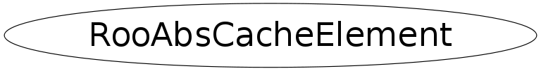

Function Members (Methods)
This is an abstract class, constructors will not be documented.
Look at the header to check for available constructors.
public:
| virtual | ~RooAbsCacheElement() |
| static TClass* | Class() |
| virtual RooArgList | containedArgs(RooAbsCacheElement::Action) |
| virtual void | findConstantNodes(const RooArgSet& obs, RooArgSet& cacheList, RooLinkedList& processedNodes) |
| virtual TClass* | IsA() const |
| RooAbsCacheElement& | operator=(const RooAbsCacheElement&) |
| virtual void | operModeHook(RooAbsArg::OperMode) |
| virtual void | optimizeCacheMode(const RooArgSet& obs, RooArgSet& optNodes, RooLinkedList& processedNodes) |
| virtual void | printCompactTreeHook(ostream&, const char*, Int_t curElem, Int_t totElem) |
| virtual Bool_t | redirectServersHook(const RooAbsCollection&, Bool_t, Bool_t, Bool_t) |
| void | setOwner(RooAbsArg* owner) |
| virtual void | ShowMembers(TMemberInspector& insp) |
| virtual void | Streamer(TBuffer& b) |
| void | StreamerNVirtual(TBuffer& b) |
Data Members
protected:
| RooAbsArg* | _owner | ! Pointer to owning RooAbsArg |
Class Charts
{kind=link}
{kind=link}
{kind=link}
{kind=link}

Function documentation
Bool_t redirectServersHook(const RooAbsCollection& , Bool_t , Bool_t , Bool_t )
Interface for server redirect calls
void printCompactTreeHook(ostream& , const char* , Int_t curElem, Int_t totElem)
Hook function to print cache guts in tree printing mode of RooAbsArgs
void optimizeCacheMode(const RooArgSet& obs, RooArgSet& optNodes, RooLinkedList& processedNodes)
Interface for cache optimization calls. The default implementation is to forward all these calls to all contained RooAbsArg objects as publicized through containedArg()
void findConstantNodes(const RooArgSet& obs, RooArgSet& cacheList, RooLinkedList& processedNodes)
Interface for constant term optimization calls. The default implementation is to forward all these calls to all contained RooAbsArg objects as publicized through containedArg()
RooArgList containedArgs(RooAbsCacheElement::Action )